अध्याय 13: लोकतांत्रिक व्यवस्था का संकट
(The Crisis of Democratic Order) - भाग 1: पृष्ठभूमि
1. आपातकाल की कड़वी यादें
प्रिय विद्यार्थियों, 25 जून 1975 की आधी रात को भारत के लोकतंत्र पर एक काला साया मँडराया। प्रधानमंत्री इंदिरा गांधी ने 'आंतरिक अशांति' (Internal Disturbance) के नाम पर देश में **आपातकाल (Emergency)** की घोषणा कर दी।
लेकिन यह आपातकाल अचानक नहीं आया था। इसके पीछे कई आर्थिक और राजनैतिक कारण थे।
2. आर्थिक संकट और असंतोष
1971 की जीत के बाद लगा था कि 'गरीबी हटाओ' का सपना सच होगा, लेकिन हकीकत कुछ और थी:
- तेल संकट (Oil Crisis): अंतरराष्ट्रीय स्तर पर तेल की कीमतें बेतहाशा बढ़ गईं, जिससे महंगाई 23% से 30% तक पहुँच गई।
- बांग्लादेशी शरणार्थी: 1971 के युद्ध के बाद करोड़ों शरणार्थियों का बोझ भारतीय अर्थव्यवस्था पर पड़ा।
- मानसून की विफलता: 1972-73 में खराब मानसून के कारण अनाज की पैदावार गिर गई।
- बेरोजगारी: शिक्षित नौजवानों में भारी असंतोष था, जिससे पूरे देश में हड़तालों का दौर शुरू हुआ।
🚂 रेलवे की हड़ताल (1974)
मई 1974 में **जॉर्ज फर्नांडीस** के नेतृत्व में रेलवे कर्मचारियों ने बोनस और सेवा शर्तों के लिए देशव्यापी हड़ताल कर दी। इस हड़ताल ने पूरे देश की रफ्तार रोक दी। सरकार ने इसे 'अवैध' करार दिया और हजारों कर्मचारियों को गिरफ्तार कर लिया। यह सरकार और जनता के बीच बढ़ती खाई का सबसे बड़ा उदाहरण था। (NCERT Fact)
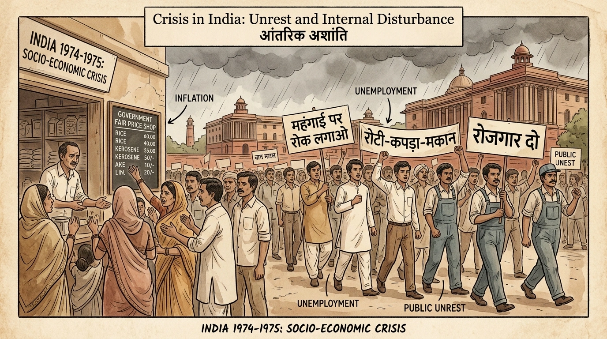
संकट का दौर: महंगाई और बेरोजगारी के खिलाफ जनता का विद्रोह। (NCERT Archive View)
भाग 2: छात्र आंदोलन और जेपी (JP Movement)
आर्थिक संकट के बाद, महंगाई और भ्रष्टाचार के खिलाफ छात्रों ने एक बड़ा मोर्चा खोल दिया। गुजरात और बिहार इन आंदोलनों के मुख्य केंद्र बने।
1. गुजरात और बिहार: आंदोलनों की आग
- गुजरात (1974): खाने-पीने की चीज़ों की बढ़ती कीमतों के खिलाफ छात्रों ने आंदोलन किया। मार्च 1974 में गुजरात विधानसभा भंग कर दी गई और वहाँ नए चुनाव हुए, जिसमें कांग्रेस को हार का मुँह देखना पड़ा।
- बिहार (1974): भ्रष्टाचार और बेरोजगारी के खिलाफ छात्रों ने आंदोलन शुरू किया। (NCERT Insight)
🛡️ जयप्रकाश नारायण (जेपी) का नेतृत्व
बिहार के छात्रों ने अपना नेतृत्व करने के लिए **जयप्रकाश नारायण** को आमंत्रित किया। जेपी ने दो शर्तें रखीं:
- 1. आंदोलन पूरी तरह **'अहिंसक'** (Non-violent) होगा।
- 2. आंदोलन केवल बिहार तक सीमित नहीं रहेगा, बल्कि पूरे देश का होगा।
- 3. नारा—**'सम्पूर्ण क्रांति' (Total Revolution):** जेपी ने समाज, राजनीति और अर्थतंत्र में पूरी तरह बदलाव की मांग की।
2. दिल्ली तक गूँज: रामलीला मैदान
जेपी के नेतृत्व में पूरा विपक्ष एकजुट हो गया। दिल्ली के रामलीला मैदान में एक विशाल रैली हुई, जहाँ जेपी ने प्रसिद्ध पंक्ति गूँजा दी—**"सिंहासन खाली करो कि जनता आती है"**। (NCERT Perspective)
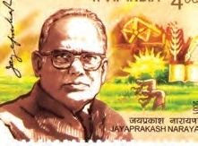
1975 में जेपी के नेतृत्व में दिल्ली के रामलीला मैदान में इतिहास की सबसे बड़ी रैली आयोजित की गई। उन्होंने 'संपूर्ण क्रांति' (Total Revolution) का आह्वान किया और विपक्षी दलों को एकजुट कर इंदिरा सरकार के खिलाफ अहिंसक आंदोलन का नेतृत्व किया।
• प्रश्न: जयप्रकाश नारायण (जेपी) द्वारा चलाए गए आंदोलन की दो मुख्य शर्तें क्या थीं?
• उत्तर: (1) आंदोलन पूरी तरह से अहिंसक (non-violent) रहेगा। (2) आंदोलन केवल बिहार तक सीमित नहीं रहेगा, बल्कि इसे देशव्यापी बनाया जाएगा।
जयप्रकाश नारायण (जेपी) (1902 - 1979)
• उपाधि: 'लोकनायक' के रूप में प्रसिद्ध, प्रख्यात गांधीवादी और समाजवादी नेता।
• महत्वपूर्ण योगदान: 1942 के भारत छोड़ो आंदोलन के नायक, नेहरू के बाद देश के सबसे लोकप्रिय नेता।
• राजनैतिक जीवन: कांग्रेस छोड़कर सोशलिस्ट पार्टी का गठन किया, बाद में विनोबा भावे के भूदान आंदोलन में शामिल हुए। 1974 के बिहार आंदोलन और 'सम्पूर्ण क्रांति' (Total Revolution) के प्रणेता। आपातकाल के बाद इंदिरा गांधी विरोधी दलों को एकजुट कर सत्ता परिवर्तन कराया।
🛑 मुख्य विचार:
छात्रों और जेपी के इस आंदोलन ने इंदिरा गांधी की सरकार की चूलें हिला दीं। यह आंदोलन केवल भ्रष्टाचार के खिलाफ नहीं था, बल्कि यह राजनैतिक शक्ति के केंद्रीकरण के खिलाफ भी एक बड़ी आवाज़ थी।
भाग 3: न्यायपालिका के साथ संघर्ष (Conflict with Judiciary)
1970 के दशक में सरकार और न्यायपालिका के बीच का टकराव अपने चरम पर था। यह सब शुरू हुआ एक ऐतिहासिक अदालती फैसले से जिसने भारतीय राजनीति की दिशा बदल दी।
1. इलाहाबाद हाई कोर्ट का फैसला (12 जून 1975)
12 जून 1975 को इलाहाबाद हाई कोर्ट के न्यायाधीश **जगमोहन लाल सिन्हा** ने एक ऐसा फैसला सुनाया जिसने इंदिरा गांधी की सत्ता की चूलें हिला दीं।
- आरोप: राज नारायण नाम के नेता ने आरोप लगाया था कि इंदिरा गांधी ने 1971 के चुनावों में सरकारी मशीनरी का दुरुपयोग किया।
- फैसला: कोर्ट ने इंदिरा गांधी के चुनाव को **'अवैध'** और **'शून्य'** घोषित कर दिया। इसका मतलब था कि अब वह प्रधानमंत्री नहीं रह सकती थीं।
- प्रतिक्रिया: इंदिरा गांधी ने इस फैसले के खिलाफ सुप्रीम कोर्ट में अपील की।
🛡️ सुप्रीम कोर्ट का फैसला (24 जून 1975)
सुप्रीम कोर्ट ने इलाहाबाद कोर्ट के फैसले पर **'आंशिक स्थगन'** (Partial Stay) लगा दिया। कोर्ट ने कहा कि इंदिरा गांधी प्रधानमंत्री तो बनी रह सकती हैं, लेकिन वह संसद की कार्यवाही में हिस्सा नहीं लेंगी। इसी तनाव के बीच जेपी और विपक्ष ने इंदिरा गांधी से इस्तीफा मांगना शुरू कर दिया। (NCERT Insight)
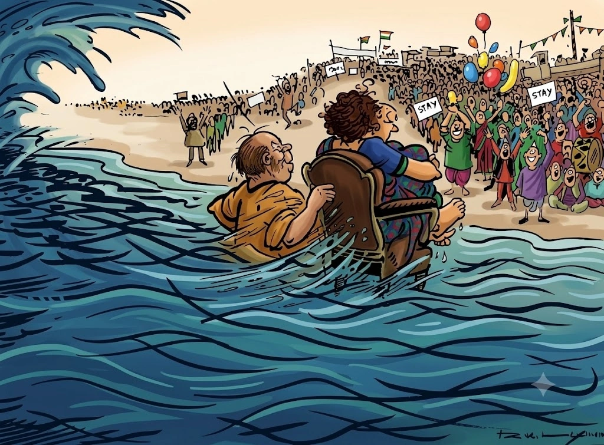
यह प्रसिद्ध आर. के. लक्ष्मण का कार्टून आपातकाल की घोषणा से कुछ दिन पहले प्रकाशित हुआ था। यह उस समय के गंभीर राजनैतिक संकट को दर्शाता है। कार्टून में प्रधानमंत्री इंदिरा गांधी 'कंडीशनल स्टे ऑर्डर' (आंशिक स्थगन आदेश) लिखी कुर्सी पर बैठी हैं, जो राजनीतिक तूफान की लहरों (Political Crisis) में घिरी है। उनके पीछे कांग्रेस अध्यक्ष डी. के. बरुआ कुर्सी को थामे हुए खड़े हैं और कह रहे हैं कि इतनी भारी भीड़ के समर्थन के बाद आपको इस्तीफा देने के बारे में नहीं सोचना चाहिए।
• प्रश्न: 'कंडीशनल स्टे ऑर्डर' (Conditional Stay Order) से यहाँ क्या तात्पर्य है और इसका क्या प्रभाव पड़ा?
• उत्तर: (1) **तात्पर्य:** 24 जून 1975 को सुप्रीम कोर्ट ने इलाहाबाद हाई कोर्ट के फैसले पर आंशिक रोक लगाते हुए कहा कि इंदिरा गांधी प्रधानमंत्री पद पर बनी रह सकती हैं, लेकिन वे लोकसभा की कार्यवाही में मतदान नहीं कर सकतीं। (2) **प्रभाव:** विपक्ष ने इसके बाद इंदिरा गांधी के इस्तीफे के लिए आंदोलन तेज कर दिया, जिसके प्रत्युत्तर में इंदिरा गांधी ने 25 जून की रात को आपातकाल घोषित कर दिया।
• प्रश्न: कार्टून में इंदिरा गांधी की कुर्सी के पीछे खड़े व्यक्ति कौन हैं और उनका भारतीय राजनीति में क्या प्रसिद्ध नारा था?
• उत्तर: वे तत्कालीन कांग्रेस अध्यक्ष **डी. के. बरुआ** हैं। उनका प्रसिद्ध नारा **"इंदिरा इज इंडिया, इंडिया इज इंदिरा"** (Indira is India, India is Indira) उस समय कांग्रेस के भीतर इंदिरा गांधी के प्रति व्यक्ति-पूजा का प्रतीक था।
2. मुख्य संघर्ष के मुद्दे
सरकार और कोर्ट के बीच तीन बड़ी बातों को लेकर खींचतान थी:
- मौलिक अधिकार बनाम नीति निदेशक तत्व: सरकार चाहती थी कि वह मौलिक अधिकारों में कटौती कर सके।
- संसद की शक्ति: क्या संसद संविधान के किसी भी हिस्से को बदल सकती है? (केशवानंद भारती केस)।
- न्यायाधीशों की नियुक्ति: सरकार ने तीन वरिष्ठ जजों की अनदेखी करके **ए. एन. रे** को मुख्य न्यायाधीश (CJI) बनाया, जिसे न्यायपालिका की आजादी पर हमला माना गया।
🛑 मुख्य विचार:
इलाहाबाद हाई कोर्ट का फैसला ही वह 'चिंगारी' थी जिसने आपातकाल के बारूद को जलाया। इंदिरा गांधी के पास केवल दो ही रास्ते थे—या तो कुर्सी छोड़ दें या संविधान की शक्ति का इस्तेमाल कर पूरी व्यवस्था को ही बंधक बना लें। उन्होंने दूसरा रास्ता चुना!
भाग 4: आपातकाल की घोषणा (25 जून 1975)
25 जून 1975 की रात को भारत के इतिहास में 'काली रात' कहा जाता है। वह रात जब देश सो रहा था और लोकतंत्र को बंधक बना लिया गया।
1. अनुच्छेद 352 का प्रयोग
सरकार ने **अनुच्छेद 352** का उपयोग करते हुए 'आंतरिक अशांति' के आधार पर आपातकाल की घोषणा की। राष्ट्रपति **फखरुद्दीन अली अहमद** ने देर रात इस पर हस्ताक्षर कर दिए।
- आधी रात के अंधेरे: दिल्ली के कई अखबारों के दफ्तरों की बिजली काट दी गई ताकि वे अगले दिन खबर न छाप सकें।
- नेताओं की गिरफ्तारी: जयप्रकाश नारायण, अटल बिहारी वाजपेयी, लालकृष्ण आडवाणी और अन्य विपक्षी नेताओं को रातों-रात जेल में डाल दिया गया।
🛑 प्रेस सेंसरशिप (Press Censorship)
आपातकाल के दौरान प्रेस की आजादी पूरी तरह खत्म कर दी गई। अब अखबारों को कुछ भी छापने से पहले सरकार से अनुमति लेनी पड़ती थी।
- 1. 'इंडियन एक्सप्रेस' और 'स्टेट्समैन' ने अपना विरोध जताने के लिए संपादकीय (Editorial) की जगह खाली छोड़ दी।
- 2. 'संगठन' पर प्रतिबंध: आरएसएस (RSS) और जमात-ए-इस्लामी जैसे संगठनों पर रातोंरात पाबंदी लगा दी गई।
- 3. डिटेंशन (MISA): **MISA** जैसे सख्त कानूनों का इस्तेमाल करके बिना किसी मुकदमे के किसी को भी जेल में रखा जा सकता था।
2. 20 सूत्रीय कार्यक्रम (20-Point Programme)
इंदिरा गांधी ने आपातकाल के दौरान अपनी लोकप्रियता को बनाए रखने के लिए 20-सूत्रीय कार्यक्रम किया। इसमें भूमि सुधार, बंधुआ मजदूरी का अंत और गरीबों को घर देने जैसे लोकलुभावन वादे किए गए। (NCERT Perspective)
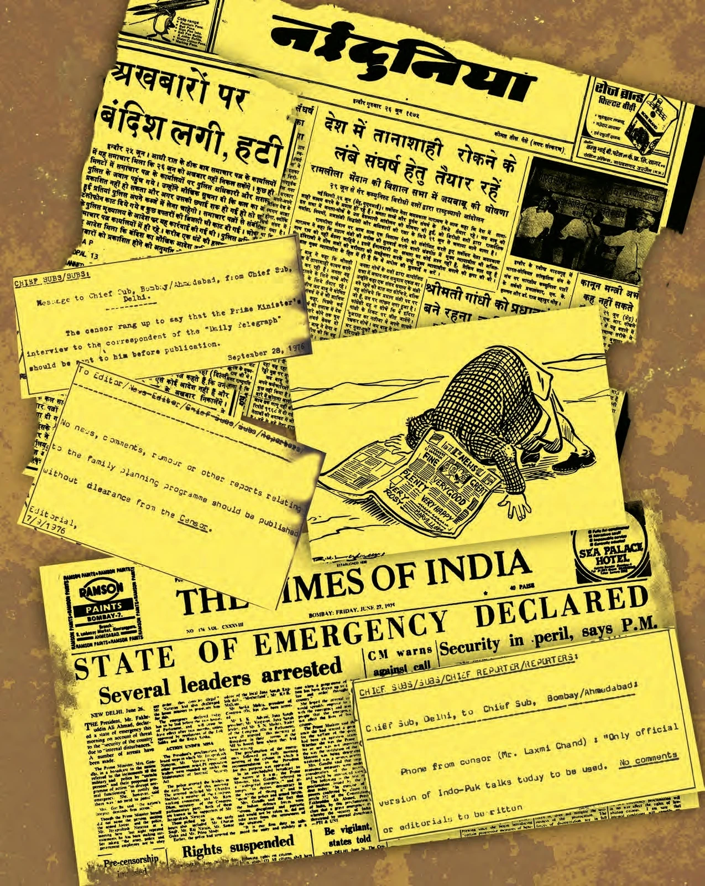
25 जून 1975 की रात को आपातकाल की घोषणा की गई और रातों-रात प्रमुख समाचार पत्रों (जैसे इंडियन एक्सप्रेस और मद्रास मेल) के दफ्तरों की बिजली काट दी गई। सरकार ने प्रेस सेंसरशिप लागू कर दी, जिससे प्रेस की आज़ादी छीन ली गई।
• प्रश्न: आपातकाल के दौरान 'प्रेस सेंसरशिप' (Press Censorship) का क्या प्रभाव पड़ा?
• उत्तर: समाचार पत्रों और मीडिया हाउसों को निर्देशित किया गया कि वे कुछ भी छापने से पहले सरकार (सेंसर अधिकारी) की अनुमति लें। इसके विरोध में कई समाचार पत्रों ने संपादकीय पन्नों को खाली छोड़ दिया और प्रसिद्ध लेखकों ने अपने पद्म पुरस्कार लौटा दिए।
🛑 मुख्य विचार:
आपातकाल की घोषणा ने यह साबित किया कि जब सत्ता को कोई खतरा होता है, तो वह किसी भी हद तक जा सकती है। भारतीय लोकतंत्र के इतिहास का यह सबसे विवादास्पद अध्याय था जिसने भविष्य के कई कानूनों को जन्म दिया।
भाग 5: आपातकाल के परिणाम और प्रभाव (Consequences)
आपातकाल का अर्थ केवल नेताओं की गिरफ्तारी नहीं था, बल्कि इसने आम जनता के जीवन को भी बुरी तरह प्रभावित किया। इसके कुछ भयंकर परिणाम हुए:
1. मानवाधिकारों का हनन
आपातकाल के दौरान नागरिकों के 'मौलिक अधिकार' (Fundamental Rights) छीन लिए गए और लोग कोर्ट भी नहीं जा सकते थे।
- जबरन नसबंदी (Forced Sterilization): जनसंख्या को नियंत्रित करने के नाम पर हजारों लोगों की जबरन नसबंदी की गई। (संजय गांधी की योजनाएं)।
- तुर्कमान गेट की घटना: दिल्ली में झुग्गी-झोपड़ियों को हटाने के दौरान पुलिस की बर्बरता का शिकार हुए सैकड़ों लोग। (NCERT Insight)
- हिरासत में मौतें: कई राजनैतिक बंदियों की पुलिस हिरासत में मौतें हुईं।
📜 42वाँ संविधान संशोधन (Mini Constitution)
सरकार ने संविधान में इतने सारे बदलाव किए कि इसे 'नया संविधान' ही कहा जाने लगा। इसके दो मुख्य उद्देश्य थे:
- 1. प्रधानमंत्री की शक्ति बढ़ाना: ताकि कोर्ट हस्तक्षपे न कर सके।
- 2. कार्यकाल बढ़ाना: लोकसभा का कार्यकाल 5 साल से बढ़ाकर **6 साल** कर दिया गया।
- 3. धर्मनिरपेक्ष और समाजवादी शब्दों को प्रस्तावना में जोड़ा गया।
2. आपातकाल के प्रति प्रतिरोध
इतनी पाबंदियों के बावजूद लोगों ने हार नहीं मानी। विपक्षी नेताओं ने जेल से ही अपना संघर्ष जारी रखा। कई पत्रकारों और साहित्यकारों (जैसे फणीश्वर नाथ 'रेणु') ने अपने पद्म-पुरस्कार लौटा दिए। (NCERT Perspective)

आपातकाल के दौरान निवारक नजरबंदी (Preventive Detention) का बड़े पैमाने पर दुरुपयोग हुआ। विपक्षी नेताओं को बिना मुकदमा चलाए जेलों में डाल दिया गया, संजय गांधी के नेतृत्व में जबरन नसबंदी की गई और दिल्ली में तुर्कमान गेट विध्वंस जैसी बर्बरता हुई।
• प्रश्न: आपातकाल के दौरान 'निवारक नजरबंदी' (Preventive Detention) का दुरुपयोग कैसे किया गया?
• उत्तर: सामान्यतः निवारक नजरबंदी किसी व्यक्ति को अपराध करने से रोकने के लिए होती है, लेकिन आपातकाल में इसका उपयोग विपक्षी नेताओं, बुद्धिजीवियों और सामाजिक कार्यकर्ताओं की आवाज़ को दबाने के लिए किया गया, जिसमें उन्हें कोर्ट जाने का अधिकार भी नहीं दिया गया (बंदी प्रत्यक्षीकरण का निलंबन)।
🛑 मुख्य विचार:
आपातकाल ने सिखाया कि लोकतंत्र में **'व्यवस्था'** से ऊपर **'व्यक्तिगत आजादी'** होनी चाहिए। यह वह साल था जब भारत ने तानाशाही का असली चेहरा देखा और कसम खाई कि इसे दोबारा कभी नहीं होने दिया जाएगा।
भाग 6: आपातकाल के बाद: 1977 के चुनाव (Result)
18 महीनों के बाद, मार्च 1977 में आपातकाल हटा लिया गया। देश में फिर से चुनाव हुए, जो भारत के राजनैतिक इतिहास में 'क्रांतिकारी' साबित हुए।
1. जनता पार्टी का गठन
आपातकाल के दौरान जेल में बंद सभी विपक्षी दल (जैसे जनसंघ, लोकदल, सोशलिस्ट) एक हो गए और **'जनता पार्टी'** बनाई।
- नेतृत्व: जयप्रकाश नारायण। उन्होंने इस चुनाव को 'लोकतंत्र बनाम तानाशाही' (Democracy vs Dictatorship) की जंग बना दिया।
- मुख्य मुद्दा: आपातकाल के दौरान हुई ज्यादतियाँ। "सेव डेमोक्रेसी" (Save Democracy) ही उनका सबसे बड़ा नारा था। (NCERT Insight)
🏆 पहली बार कांग्रेस की हार
1977 के चुनावों के नतीजे एक बहुत बड़े बदलाव की गवाही थे:
- 1. केंद्र से कांग्रेस की विदा: आजादी के 30 साल बाद पहली बार कांग्रेस केंद्र की सत्ता से बाहर हो गई।
- 2. जनता पार्टी की जीत: जनता पार्टी और उसके सहयोगियों ने **330 सीटें** जीतीं। (जनता पार्टी अकेले 295 सीटें लाई)।
- 3. इंदिरा गांधी की हार: उत्तर भारत में कांग्रेस का सूपड़ा साफ हो गया। इंदिरा गांधी (रायबरेली) और उनके बेटे संजय गांधी (अमेठी) खुद चुनाव हार गए।
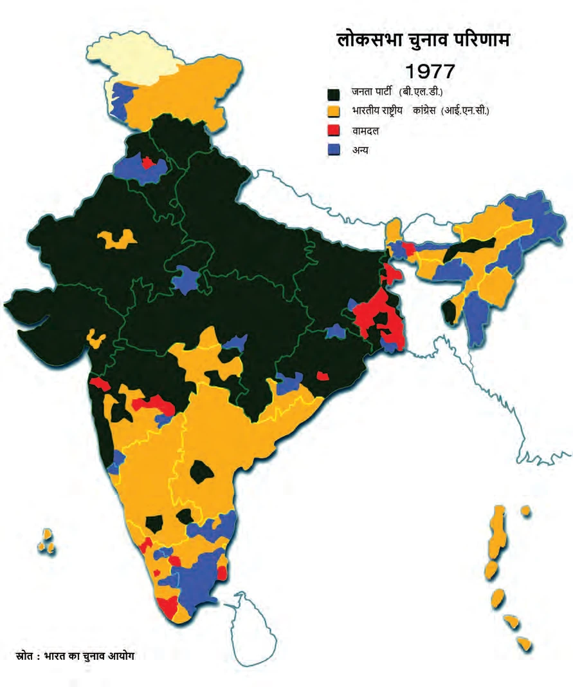
यह मानचित्र 1977 के लोकसभा चुनावों के परिणामों को दर्शाता है। इसमें हरे/काले रंग में चिह्नित क्षेत्र जनता पार्टी की भारी जीत को दर्शाते हैं (विशेष रूप से उत्तर भारत में, जहाँ उसने लगभग 100% सीटें जीतीं)। जबकि पीले रंग में कांग्रेस की सीटें मुख्य रूप से दक्षिण भारत (जैसे केरल, आंध्र प्रदेश, कर्नाटक और तमिलनाडु) में केंद्रित थीं, जहाँ आपातकाल का प्रभाव बहुत कम या सकारात्मक था।
• प्रश्न: 1977 के लोकसभा चुनाव में देश के उत्तर और दक्षिण भाग में अलग-अलग चुनावी नतीजे क्यों मिले?
• उत्तर: (1) **उत्तर भारत में आक्रोश:** उत्तर भारत में आपातकाल का दमन, जबरन नसबंदी और गिरफ्तारियों का सीधा असर पड़ा, जिससे मतदाताओं में जबरदस्त आक्रोश था। (2) **दक्षिण भारत में शांति:** दक्षिण भारत में जबरन नसबंदी या प्रशासनिक ज्यादतियाँ लगभग नगण्य थीं और लोगों ने इंदिरा गांधी के 20-सूत्रीय कार्यक्रमों (जैसे भूमि सुधार) को स्थिरता के रूप में देखा।
2. भारत का पहला 'गैर-कांग्रेसी' प्रधानमंत्री
जनता पार्टी के भीतर प्रधानमंत्री पद के लिए मोरारजी देसाई, चरण सिंह और जगजीवन राम के बीच मुकाबला था। अंततः **मोरारजी देसाई** भारत के पहले गैर-कांग्रेसी प्रधानमंत्री बने। (NCERT Perspective)
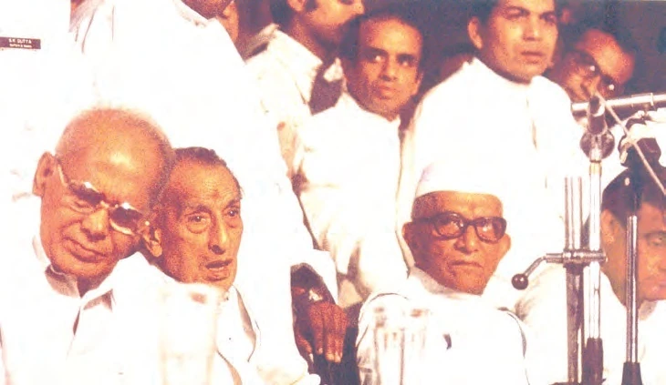
1977 के चुनावों में जनता पार्टी ने आपातकाल के खिलाफ जनादेश प्राप्त किया। कांग्रेस को लोकसभा में केवल 154 सीटें मिलीं, जबकि जनता पार्टी और उसके सहयोगियों ने 330 सीटें जीतीं। मोरारजी देसाई के नेतृत्व में पहली गैर-कांग्रेसी सरकार का शपथ ग्रहण हुआ।
• प्रश्न: 1977 के चुनावों को भारतीय लोकतंत्र में एक 'ऐतिहासिक मोड़' क्यों माना जाता है?
• उत्तर: (1) स्वतंत्रता के बाद पहली बार केंद्र में कांग्रेस सत्ता से बाहर हुई और गैर-कांग्रेसी सरकार बनी। (2) उत्तर भारत में कांग्रेस का सूपड़ा साफ हो गया, जिससे यह साबित हुआ कि भारतीय मतदाता तानाशाही और नागरिक अधिकारों के हनन को स्वीकार नहीं करते।
🛑 मुख्य विचार:
1977 के चुनावों ने पूरी दुनिया को यह दिखा दिया कि भारत के लोग गरीबी सह सकते हैं, लेकिन **आज़ादी का अपमान** कभी नहीं। यह भारतीय लोकतंत्र के परिपक्व (Mature) होने का सबसे बड़ा प्रमाण था।
भाग 7: जनता पार्टी सरकार और उसकी विफलता
1977 की जीत के बाद बहुत उम्मीदें थीं, लेकिन जनता पार्टी की सरकार एक 'खिंचड़ी' (Coalition) बनकर रह गई। आंतरिक विवादों ने उसे बहुत जल्दी कमजोर कर दिया।
1. सरकार के मुख्य काम
कम समय के बावजूद, जनता पार्टी ने कुछ महत्वपूर्ण कदम उठाए:
- शाह आयोग (Shah Commission): आपातकाल के दौरान हुई ज्यादतियों की जाँच के लिए इसे बनाया गया।
- संविधान सुधार: 44वाँ संविधान संशोधन करके आपातकाल के नियमों को कड़ा बनाया गया ताकि 'आंतरिक अशांति' के बहाने दोबारा ऐसा न हो सके। (NCERT Insight)
- मंडल आयोग (Mandal Commission): पिछड़ों के लिए आरक्षण के मुद्दों की जाँच के लिए 1978 में इसे बनाया गया।
⚡ दरारें और बिखराव
जनता पार्टी में तीन बड़े नेता प्रधानमंत्री बनना चाहते थे—मोरारजी देसाई, चरण सिंह और जगजीवन राम।
- 1. केवल 18 महीने: मोरारजी देसाई की सरकार केवल 18 महीने चली और बहुमत खो बैठी।
- 2. चरण सिंह की सरकार: इंदिरा गांधी ने बाहर से समर्थन देकर चरण सिंह को प्रधानमंत्री बनाया, लेकिन केवल 4 महीने बाद समर्थन वापस ले लिया।
- 3. अस्थिरता: जनता पार्टी के नेताओं की आपसी लड़ाई ने जनता को निराश कर दिया।
2. 1980 के चुनाव और इंदिरा की वापसी
1980 में समय से पहले चुनाव हुए। जनता ने 'अस्थिरता' को नकारते हुए एक बार फिर **इंदिरा गांधी** पर भरोसा जताया। कांग्रेस ने **353 सीटें** जीतीं। (NCERT Perspective)
मुख्य चुनावी नारा (1980): कांग्रेस ने इस चुनाव में प्रसिद्ध नारा दिया था—"इन्दिरा लाओ, देश बचाओ" (Bring Back Indira, Save the Country)। इस नारे ने जनता को एक स्थिर और मजबूत सरकार का भरोसा दिलाया।
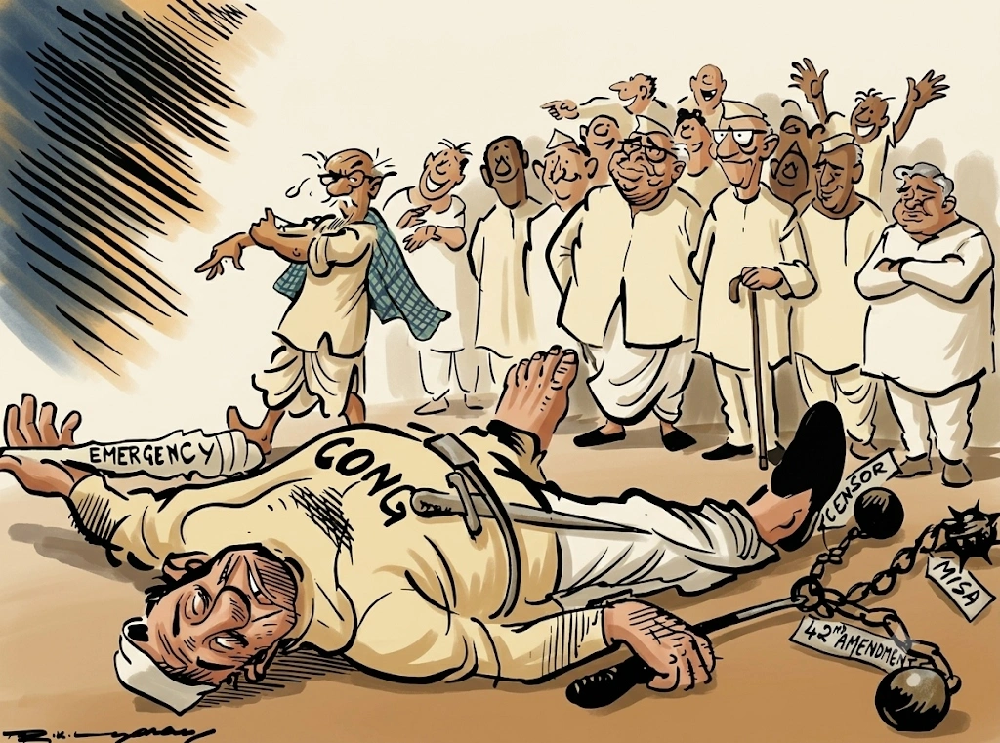
यह प्रसिद्ध आर. के. लक्ष्मण का कार्टून 1980 के मध्यावधि चुनावों में इंदिरा गांधी की भारी जीत और उनकी शानदार वापसी को दर्शाता है। कार्टून में इंदिरा गांधी एक हाथ में झाड़ू लेकर जनता पार्टी और लोकदल के सभी प्रमुख नेताओं (जो आपसी झगड़े में अपनी सरकार गिरा चुके थे) को समेटकर कूड़ेदान में डाल रही हैं, जो चुनाव में उनके पूर्ण सूपड़ा साफ होने (Sweeping the Polls) को प्रदर्शित करता है।
• प्रश्न: 1980 के मध्यावधि चुनावों में इंदिरा गांधी की कांग्रेस की वापसी के क्या मुख्य कारण थे?
• उत्तर: (1) **जनता पार्टी की विफलता:** जनता सरकार के आपसी कलह, गुटबाजी और अस्थिरता से जनता त्रस्त हो चुकी थी। (2) **स्थिरता की चाह:** इंदिरा गांधी ने **"इन्दिरा लाओ, देश बचाओ"** के नारे के साथ जनता को एक मजबूत और स्थिर सरकार देने का भरोसा दिलाया।
• प्रश्न: कार्टून में इंदिरा गांधी द्वारा विपक्षी नेताओं को कूड़ेदान में डालते दिखाना किस मुहावरे का राजनीतिक अर्थ प्रकट करता है?
• उत्तर: यह 'Sweeping the Polls' (चुनावों में सूपड़ा साफ करना) मुहावरे को दर्शाता है, जिसका अर्थ है कि इंदिरा गांधी ने सभी विपक्षी दलों को बुरी तरह हराकर संसद में दो-तिहाई से अधिक बहुमत (353 सीटें) हासिल किया।
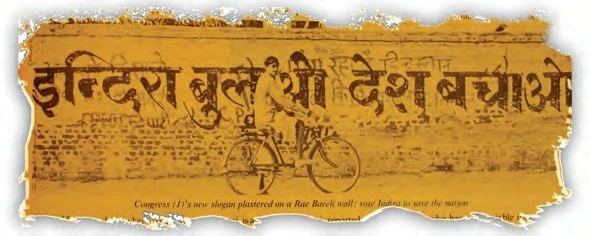
1977 में बनी जनता पार्टी की सरकार में कोई तालमेल नहीं था। प्रधानमंत्री पद के लिए मोरारजी देसाई, चौधरी चरण सिंह और जगजीवन राम के बीच जबरदस्त खींचतान थी। इस आपसी कलह के कारण सरकार केवल 18 महीने में गिर गई।
• प्रश्न: 1977 की जनता पार्टी सरकार के पतन के मुख्य कारण क्या थे?
• उत्तर: (1) **नेतृत्व का संघर्ष:** पार्टी के तीन प्रमुख नेताओं (मोरारजी देसाई, चरण सिंह, जगजीवन राम) के बीच प्रधानमंत्री बनने की व्यक्तिगत होड़। (2) **वैचारिक मतभेद:** जनता पार्टी विभिन्न परस्पर विरोधी विचारधाराओं (समाजवादी, दक्षिणपंथी, जनसंघ) का एक अस्थाई गठबंधन थी, जिसके पास कोई ठोस साझा कार्यक्रम नहीं था।
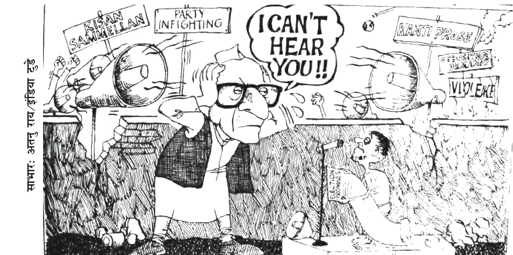
यह कार्टून प्रधानमंत्री मोरारजी देसाई की लाचारी को दर्शाता है, जो अपने दोनों कानों को बंद किए हुए हैं। एक तरफ चौधरी चरण सिंह के समर्थकों का भारी 'किसान सम्मेलन' का शोर है, और दूसरी तरफ विपक्ष की 'कांति जांच' (Kanti Probe - मोरारजी देसाई के पुत्र कांति देसाई के खिलाफ भ्रष्टाचार की जांच की मांग) और विरोध प्रदर्शनों का भारी कोलाहल है। नीचे एक आम नागरिक चुनाव घोषणापत्र (Election Promises) हाथ में लिए खड़ा है, जिसकी आवाज़ सरकार तक नहीं पहुँच पा रही है।
• प्रश्न: जनता पार्टी सरकार के समय 'कांति जांच' (Kanti Probe) क्या विवाद था?
• उत्तर: यह प्रधानमंत्री मोरारजी देसाई के पुत्र कांति देसाई के खिलाफ भ्रष्टाचार के आरोपों की जांच के लिए विपक्ष द्वारा की गई मांग थी, जिसने जनता सरकार की छवि को काफी नुकसान पहुँचाया।
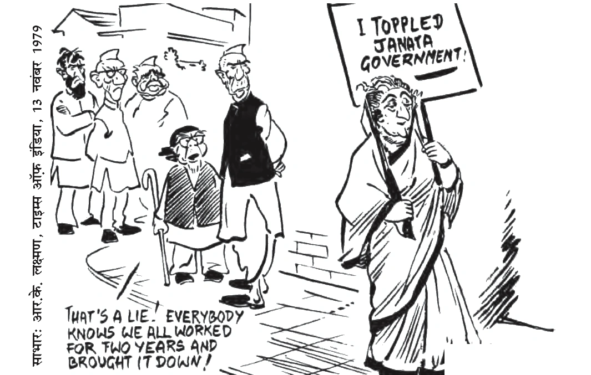
इस कार्टून में इंदिरा गांधी हाथ में एक तख्ती लिए खड़ी हैं जिस पर लिखा है "मैंने जनता सरकार को गिराया!" (I Toppled Janata Government!)। उनके पीछे खड़े जनता पार्टी के नेता (जैसे मोरारजी देसाई, चरण सिंह, जगजीवन राम) विरोध करते हुए कह रहे हैं: "यह झूठ है! हर कोई जानता है कि हम सबने दो साल तक मेहनत की और इसे खुद गिराया!" यह जनता पार्टी के आंतरिक कलह पर एक करारा कटाक्ष है।
• प्रश्न: इंदिरा गांधी ने चौधरी चरण सिंह की सरकार को किस प्रकार समर्थन दिया और वापस लिया?
• उत्तर: मोरारजी देसाई के इस्तीफे के बाद, इंदिरा गांधी की कांग्रेस पार्टी ने चौधरी चरण सिंह को सरकार बनाने के लिए बाहर से समर्थन दिया, लेकिन केवल चार महीने बाद (संसद में बहुमत साबित करने से ठीक पहले) समर्थन वापस ले लिया, जिससे उनकी सरकार गिर गई।
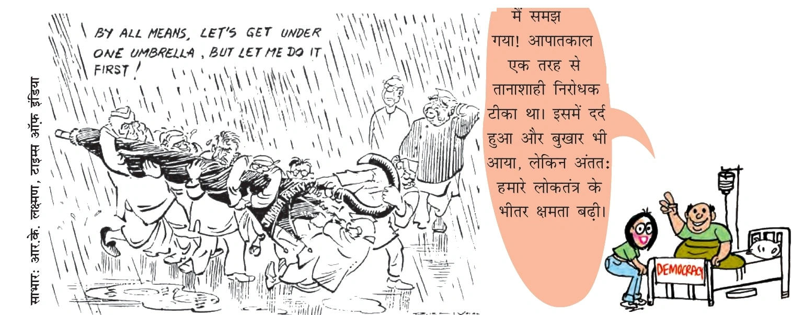
इस कार्टून में जनता पार्टी के सभी नेता बारिश से बचने के लिए 'जनता पार्टी' नाम की एक ही छतरी के नीचे आने की कोशिश कर रहे हैं, लेकिन हर नेता (मोरारजी, चरण सिंह, जगजीवन राम) कह रहा है: "चलो एक ही छतरी के नीचे चलते हैं, लेकिन पहले मुझे जाने दो!" यह उनकी व्यक्तिगत सत्ता-लोलुपता और एकजुटता के अभाव को दर्शाता है। दाईं ओर "DEMOCRACY" (लोकतंत्र) नामक मरीज को दिखाया गया है जिसे आपातकाल रूपी कड़वी सुई (वैक्सीनेशन) लगाई गई थी, जिसने लोकतंत्र की प्रतिरोधक क्षमता को बढ़ाया।
• प्रश्न: जनता पार्टी की 'छतरी' (Coalition) में शामिल प्रमुख घटक दल कौन-से थे?
• उत्तर: संगठन कांग्रेस (Congress O), जनसंघ, भारतीय लोकदल, सोशलिस्ट पार्टी और जगजीवन राम की 'कांग्रेस फॉर डेमोक्रेसी' (CFD) शामिल थे।
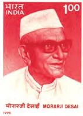
मोरारजी देसाई (1896 - 1995)
• उपाधि: भारत के पहले गैर-कांग्रेसी प्रधानमंत्री (1977-1979)।
• राजनैतिक जीवन: स्वतंत्रता सेनानी, बॉम्बे प्रांत के मुख्यमंत्री, इंदिरा गांधी के मंत्रिमंडल में उप-प्रधानमंत्री और वित्त मंत्री। 1969 के कांग्रेस विभाजन के समय सिंडिकेट गुट के साथ रहे और बाद में जनता पार्टी में शामिल हुए।
• सिद्धांत: गांधीवादी सिद्धांतों के कट्टर समर्थक, परमाणु अप्रसार संधि के विरोधी, अपनी प्रशासनिक दक्षता और सिद्धांतों के प्रति दृढ़ता के लिए जाने जाते थे।
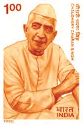
चौधरी चरण सिंह (1902 - 1987)
• उपाधि: भारत के पांचवें प्रधानमंत्री (जुलाई 1979 - जनवरी 1980)।
• महत्वपूर्ण योगदान: उत्तर प्रदेश के प्रमुख किसान नेता, जमींदारी उन्मूलन और भूमि सुधारों के प्रणेता।
• राजनैतिक जीवन: उत्तर प्रदेश के मुख्यमंत्री रहे, कांग्रेस से अलग होकर भारतीय लोक दल का गठन किया। 1977 में जनता सरकार में गृह मंत्री और उप-प्रधानमंत्री रहे। बाद में कांग्रेस के बाहरी समर्थन से प्रधानमंत्री बने।
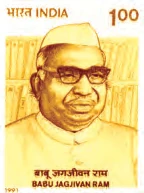
जगजीवन राम (बाबूजी) (1908 - 1986)
• उपाधि: बाबूजी, प्रख्यात दलित नेता।
• महत्वपूर्ण योगदान: संविधान सभा के सदस्य, भारत के रक्षा मंत्री (1971 के भारत-पाक युद्ध के समय), और उप-प्रधानमंत्री (1977-1979)।
• राजनैतिक जीवन: 1936 से 1986 तक लगातार संसद सदस्य रहने का विश्व रिकॉर्ड। आपातकाल के तुरंत बाद कांग्रेस छोड़कर 'कांग्रेस फॉर डेमोक्रेसी' का गठन किया।
🛑 मुख्य विचार:
जनता पार्टी का दौर केवल 'विपक्ष' की एकता का उदाहरण था, न कि **'सफल प्रशासन'** का। लेकिन इस दौर ने यह साबित कर दिया कि भारत में अब कोई भी दल हमेशा के लिए सत्ता पर काबिज नहीं रह सकता।
अध्याय 13: मेगा प्रश्न बैंक (Board Exam Special)
1. अध्याय का सार (Chapter Summary)
इस अध्याय में हमने देखा कि भारत के लोकतंत्र ने कैसे 1975 के आपातकाल के कठिन दौर का सामना किया और फिर से एक मजबूत लोकतांत्रिक राष्ट्र के रूप में उभरा।
खंड A: अति-लघु उत्तरीय प्रश्न (1 अंक)
- Q1: 1975 में आपातकाल की घोषणा किस अनुच्छेद के तहत की गई थी?
Ans: अनुच्छेद 352। - Q2: 'सम्पूर्ण क्रांति' का आह्वान किसने किया था?
Ans: जयप्रकाश नारायण (जेपी)। - Q3: भारत के पहले 'गैर-कांग्रेसी' प्रधानमंत्री कौन थे?
Ans: मोरारजी देसाई। - Q4: आपातकाल की जाँच के लिए कौन-सा आयोग बनाया गया था?
Ans: शाह आयोग।
खंड B: लघु उत्तरीय प्रश्न (4 अंक)
- Q1: आपातकाल के दौरान प्रेस की क्या स्थिति थी?
Ans: प्रेस पर 'सेंसरशिप' लगा दी गई थी, बिना सरकारी अनुमति के कुछ भी नहीं छापा जा सकता था और कई अखबारों ने विरोध स्वरूप संपादकीय की जगह खाली छोड़ दी थी। - Q2: 1977 के चुनावों में जनता पार्टी की जीत के मुख्य कारण क्या थे?
Ans: आपातकाल की ज्यादतियों के प्रति आक्रोश, जेपी का करिश्माई नेतृत्व और विपक्षी दलों की अभूतपूर्व एकता।
खंड C: दीर्घ उत्तरीय प्रश्न (6 अंक) [V.V. IMP]
Q: आपातकाल भारत के लोकतंत्र के लिए क्या सबक (Lessons) छोड़ गया? चर्चा करें।
Ans:
- पहला: भारत में लोकतंत्र को खत्म करना लगभग असंभव है।
- दूसरा: 'आंतरिक अशांति' के नियम को खत्म करके अब केवल 'सशस्त्र विद्रोह' की स्थिति में ही आपातकाल लग सकता है।
- तीसरा: जनता के मौलिक अधिकारों की रक्षा के लिए न्यायपालिका और नागरिक समाज (Civil Society) की मजबूती जरूरी है।
- चौथा: वफादारी अब केवल प्रधानमंत्री तक नहीं, बल्कि संविधान के प्रति होनी चाहिए।
अध्याय 13 का 'गुरुमंत्र' (Master Notes Summary)
- 1. आपातकाल भारतीय लोकतंत्र का एक भयंकर परीक्षण (Dark Test) था।
- 2. जेपी के आंदोलन ने सत्ता के खिलाफ जनता की आवाज़ को बुलंद किया।
- 3. 25 जून 1975 की रात ने अभिव्यक्ति की आजादी का गला घोंटा।
- 4. नसबंदी और मानवाधिकार हनन ने इंदिरा गांधी को सत्ता से बाहर कर दिया।
- 5. 1977 की जीत भारतीय जनता की राजनैतिक परिपक्वता का प्रमाण थी।
- 6. जनता पार्टी की विफलता ने सिखाया कि 'गठबंधन' के लिए स्थिरता जरूरी है।
- 7. लोकतंत्र केवल एक चुनाव नहीं, बल्कि नागरिक अधिकारों की रक्षा है!